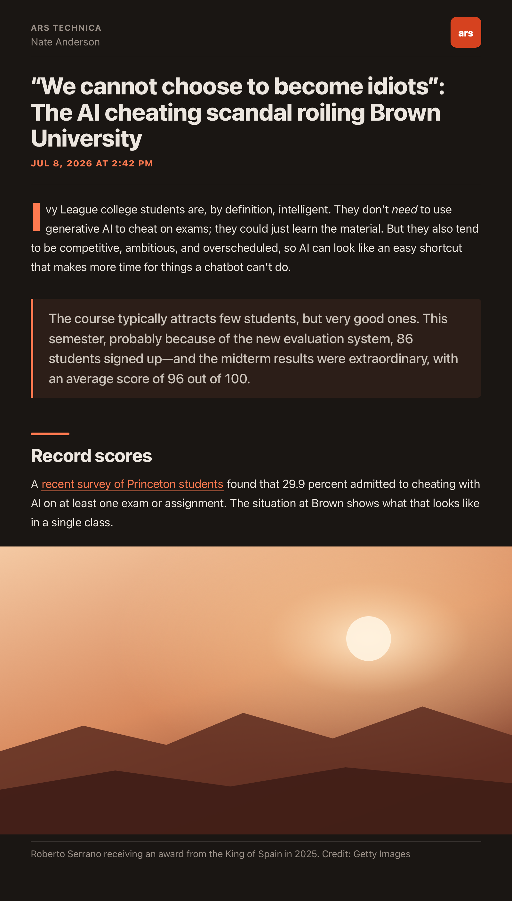
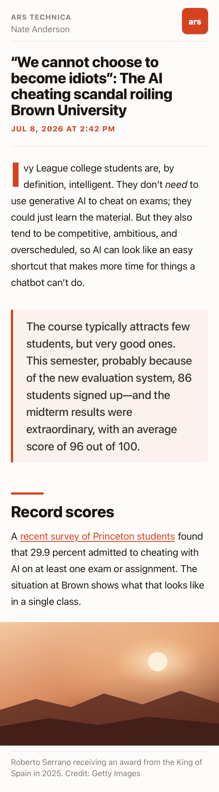
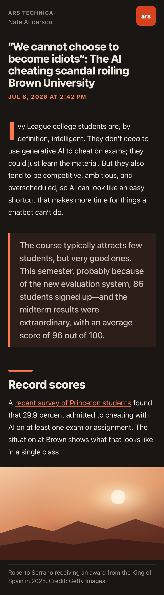

A warm, editorial theme for NetNewsWire that feels like a magazine using Apple system fonts, drop caps, and big headlines.
Generous type, full-bleed imagery, and a confident headline scale.

The same design, tuned for touch — Dynamic Type on iPhone, larger default sizing on iPad.


SF Pro throughout — no downloads, crisp at every size, native on every device.
An editorial accent that shifts to a lighter coral in the dark so it always reads clearly.
An oversized opening capital and a confident title scale set an unmistakable tone.
A short accent bar marks each section — structure you can scan.
Photos span the full column edge-to-edge, with captions kept neatly inset.
Both themes are designed, not inverted — with a warm ground on either side.
Ember.nnwtheme. On iOS/iPadOS, open the .zip and share it to NetNewsWire.